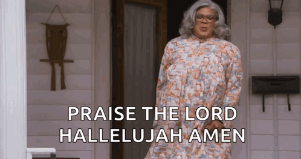

Remont konfesjonału
Rozpoczynamy remont naszego zabytkowego konfesjonału. Większość środków udało się nam pozyskać w postaci dotacji, ale część musimy mieć w postaci wkładu własnego, dlatego zwracamy się do Państwa z prośbą o wsparcie, tak jak to miało miejsce przy renowacji ołtarza. Kwota jaką potrzebujemy zebrać to ok. 70 000,00 zł.
Konserwacja i restauracja konfesjonału wraz z przynależnym wystrojem malarskim, rzeźbiarskim, snycerskim i sztukatorskim oraz elementami metalowymi.
Koszt całkowity: 233 551,70 zł.
Dotacja z Gminy Kąty Wrocławskie: 115 000,00 zł.
Dotacja z Powiatu Wrocławskiego: 50 000.00 zł.
Wkład własny: 68 551,70 zł.
Jeśli ktoś z Państwa zechciałby wesprzeć projekt renowacji konfesjonału, może to uczynić poprzez wpłatę na konto parafialne, wpisując w tytule słowo „KONFESJONAŁ”. Z góry dziękuję wszystkim Ofiarodawcom, których wspólnota parafialna w Jaszkotlu obejmuje swoją wdzięczną modlitwą.
Termin rozliczenia inwestycji upływa w październiku 2026.
Jednocześnie informujemy, że darowizny na cele kultu religijnego można odliczyć od dochodu. Zasady odliczenia można znaleźć tutaj.
Nr konta Parafii: 87 95740005 2001 0039 0983 0001
Aktualnie (stan na 2026-10-11 22:00) mamy 68 551,70 zł, co stanowi 100,00% potrzebnej kwoty. Tym samym zbiórka zostaje uznana za zakończoną. Serdeczne Bóg zapłać wszystkim darczyńcom!
